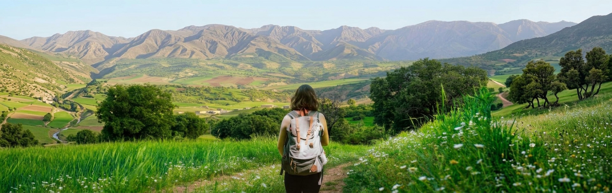
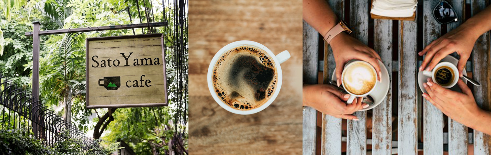
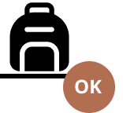
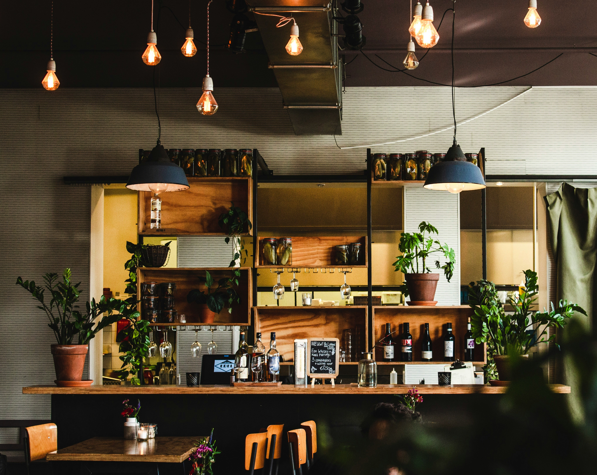
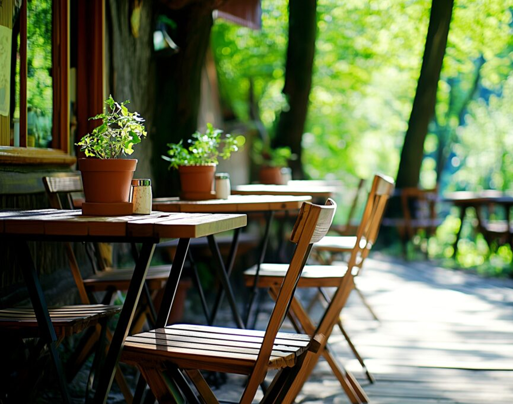

町田のぜんぶ、いただこう
町田の里山で心と体を整える、小さな隠れ家
里山の原風景、奈良ばい谷戸の傍に位置する、里山カフェ
ハイキングの立ち寄り場として、2027年5月にオープンしました。
里山風景を楽しんでほしい
地域の方の憩いの場になってほしい
季節の食事や飲み物で元気になってほしい
そんな想いから実現しました。
最寄りの駅はありません。里山カフェまでの道のりは、舗装道路ではありません。
皆さん徒歩でいらしてください。
ですので、雨の日は休業といたします。
ハイカーの方
唐木田駅からのルート
店内
カウンター5席、4人テーブル2席の小さなカフェです。
ウッディな落ち着いた雰囲気。
ハイキングの方
一時荷物預かりができます。必要な際はお声がけください。
広いトイレをご用意しております。お着換えにご利用ください。


テラス席
里山の景色を堪能。
ワンちゃんもご一緒に。
靴を洗える水道あります。
